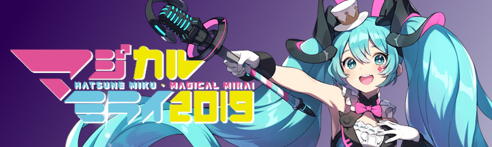
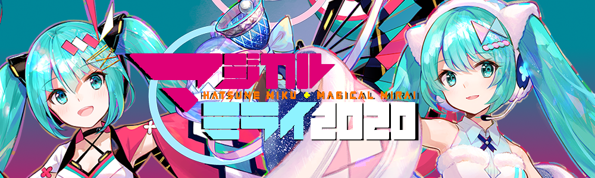

¡Bienvenido a Hatsune Miku
"Magical Mirai 2019" y "Magical Mirai 2020"!
En este evento combinado de concierto en vivo y exhibición, podrás experimentar la cultura creativa de Hatsune Miku que conduce al futuro.
El año pasado contamos con más de 40.000 asistentes. En 2019, para la séptima edición del evento, Magical Mirai se llevará a cabo en dos ciudades, Tokio y Osaka.
Localizaciones en Tokio y en Osaka
¡El tema de este año será "Future Circus" y la canción principal "Bless Your Breath"!

Deseando que "Magical Mirai" sea un lugar especial para que fans, creadores y empresas se reúnan y experimenten lo extraordinario juntos.
Diviértanse juntos y creen conexiones hacia el futuro.
¡El tema de 2020 (con una versión de verano para Osaka y otra de invierno para Tokio) será "MATSURI" y la canción principal "Because You're Here"!